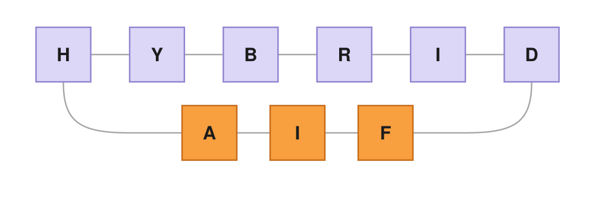

Continuous-discrete-amortized active inference in JAX
hybrid-aif is a Python/JAX library for production-grade active inference and probabilistic machine learning. It supports inference, learning, and planning on models with heterogeneous pieces: continuous, discrete, and mixture factors as well as amortized functions (e.g. neural nets). Models and objectives can be specified flexibly and come with detailed model comparison and logging tools. Core features:
- Factor-graph primitives beyond the exponential family. Core distributions like conditional categoricals and Gaussians, as well as various types of mixture model (e.g. Gaussian mixtures, switching linear dynamical systems, and mixture dynamics), but also user-defined nonlinear and deterministic functions and amortized neural factors.
- Hybrid inference engine. Generative models are compiled and differentiable using JAX, and closed-form conjugate message-passing can run alongside gradient- and sample-based inference and learning in the same model.
- Flexible generative model declaration. Control states and parameters are first-class variables in a factor graph, and can thus be conditioned on other variables or used as targets for preferences or terminal-state constraints. Latent control states and realized actions are distinct variables in the model, linked via actuator kernels.
- Compositionality. Agents, environments, and their interactions are described as nested physical systems using a single underlying
Systemprimitive, so hierarchical and nested systems are expressed in the same language as coupled agent-environment interactions.
- Fine-grained objective specification. The objective for planning is standard expected free energy by default, but information gain and parameter novelty terms can be ablated per-variable, and a handful of term primitives can be used to express AIF-adjacent objectives such as maximum-occupancy and others (on the roadmap: empowerment).
- Runtime enabling parallelism and scheduling. Simulations can be duplicated along a batch dimension. Layers in hierarchical and other multi-component systems can run at different relative speeds. User-defined update schedules with sensible defaults allow both synchronous (Jacobi) and fixed-schedule (Gibbs) or random (Glauber-style) sequential dynamics.
- Model description and description length. Each model can be expressed as a document, which can be assigned a Shannon description length (~= free energy), on its own or with a data- likelihood component given some data, so that models can be compared by the minimum description length principle. This facilitates using coding agents to search over models.
- Detailed logging. Term-by-term, per-factor, per-policy objective function records can be returned at each step, or turned off for a slight gain in speed.
Related work
hybrid-aif owes its discrete core to pymdp, the reference implementation of active inference for discrete state spaces in JAX, which in turn ports many functions from Karl Friston's SPM software. We aim to extend the core idea—of posterior inference over policies using an expected-free-energy objective—natively to continuous and mixed states, to learned and amortized components, and to nested and hierarchical systems.
At the same time, we are inspired by the elegance of factor-graph formulations of probabilistic inference as in RxInfer.jl, a reactive message-passing engine for factor graphs in Julia, whose authors have shown that expected-free-energy-based planning can be accomplished purely via message passing. hybrid-aif's design philosophy treats the active inference API as an abstraction over a more generic factor-graph layer, in which algorithms for explicit counterfactual policy search (enumeration, sophisticated inference) are optional planners.
Our development of a new software package was based on the need both to develop active inference models in a research setting and to embed them in larger machine-learning systems. A single canonical model description facilitates the port from research into production code, and also potentially allows one to use alternate backends for models specified in this common language (in particular, pymdp and RxInfer backend support via a thin translation layer are on the roadmap).
Solar rover demo
Overview
In this demo, a solar-powered rover builds a map of a 2.5D environment (a field with continuously varying height), classifying terrain into three kinds (firm, rough, and ice). The rover's battery charges in sunlight, which depends on which slopes are shaded. For navigation it relies on a forward camera and a GPS-like satellite signal whose quality varies over the field. The demo shows two variants: one with just the rover and one a hierarchical model whose second layer is a discrete mission planner that provides options to map a given coarse-grained sector, or to charge the battery.
Loading replay data…
Left: Contour map, with rover position/heading beliefs, satellite fixes, and patches colored by the rover's accumulated certainty about terrain class. The chosen plan's path is drawn in red, alternate plans thinner in the text color. Plans are rolled forward by the same nonlinear functions the generative process uses: The command is a drive $d \in [0, 1]$ (ratio of target to top speed) and a turn $u \in [-1, 1]$. A stall gate $g = \sigma\big((\ell - \ell_{\mathrm{stall}}) / w\big)$ damps the drive as energy reserves begin to run low, with current energy $\ell$, soft stall threshold $\ell_{\mathrm{stall}}$, and spread $w$. This is near one above the stall level and near zero near empty. Then $$\mathbf{p}_{t+1} = \mathbf{p}_t + s_t \, (\cos\theta_t, \sin\theta_t), \qquad \theta_{t+1} = \theta_t + \tau_{\max} \, g \, u, \qquad s_{t+1} = \kappa \, s_t + a \, g \, d,$$ with position $\mathbf{p}$, heading angle $\theta$, forward speed $s$, battery level $\ell$ (0 to 4), max turn rate $\tau_{\max}$ = 20 degrees per tick, $\kappa = 0.5$ speed damping and $a$ speed gain. The speed closes on $s_{\mathrm{top}} \, g \, d$ with $s_{\mathrm{top}} = a / (1 - \kappa)$, and the rover drives forward only. The energy level is updated as: $$\ell_{t+1} = \ell_t + r \, y(\mathbf{p}_t)\big[\mu + (1 - \mu)\, e^{-(s_t / s_{\mathrm{park}})^2}\big] - \big(\beta + (\delta + \delta_{\uparrow} \, c^{+}_t)\, s_t\big),$$
with a solar charge in proportion to the yield $y$ of the ground, mostly when parked, less a drain at rest, per unit of speed, and per unit of uphill climb $c^{+}_t$ (a smooth ramp of the slope along the heading; downhill costs what level ground costs). Gaussian noise of a fixed sd per coordinate is added, and the world clips the position to the field. A rover that hits a wall stops (the model does not know the walls; it knows the stall).
The graph: the model, with the table rover.field read by rover.terrain in the fast tier and by mission.map in the slow one. The table is one node because the two tiers share it outright (one learned belief by design), not because one reads a copy of the other. The belief over position is a Gaussian, drawn as its 2σ ellipse with a minimum size so it stays visible; the camera and the fix together keep it to about a centimeter.
Model
Rover tier
- Sensation. The vehicle's position is inferred via Bayesian fusion of the satellite
fixwith the camera image (img), whose neural likelihood is inverted during inference. The camera also informs a heading estimate, and the rover's beliefs about terrain classes. The rover senses its battery level via a continuous gauge.
- Action. The rover chooses continuous two-dimensional (target speed, turn rate) commands
v.
- Inference and learning. Continuous state appears in the generative model as a six-dimensional
x(2D position, 2D heading vector, speed, energy). The terrain map is a table of Dirichlet countsrover.field, whose cells are updated in proportion to the rover's discretized position belief, according to the inferredterrainclasses.
- Objectives. The rover has a continuous preference for its energy
gaugeto be more full. It also has a preference to stay within the square region of the map, implemented via a Gaussian mixture over the GPS modality. When driven by the mission planner (see below), the rover has either a broad preference to be in a given quadrant of the map for surveying, or a precise one to drive to a good charging location and wait.Exploration is driven primarily by novelty on the Dirichlet counts, and also by infogain about position from GPS, which drives the rover to find spots good for localizing. The camera's own infogain is left out: in trials the pose information in its pixels outweighed the rest of the objective and drove the rover to the walls, the only landmarks the renderer offers. A version scoped to the terrain class is the planned follow-up.
- Planning. Planning is via gradient descent on the rover level's expected free energy, from four starts and over a horizon of 12 discrete time-steps.
Mission tier
- Sensation. The mission tier observes a discretized (8-level)
gaugereading of the rover'senergy, as well as the rover's believed position, mapped to a 16 x 16 cell grid over the landscape.
- Action. Options
u_optionare to survey one of the quadrants of the map, or to head for a good charging location. The mission planner's actions accomplish this by setting the rover tier's state preferences (effectively, location and speed) for the next 24 ticks at its timescale.
- Inference and learning. The rover's discrete location
visitis inferred from an observationcell_obsthat maps the rover's believed location to a grid. The Dirichlet table filled out by the rover's survey is a parameter shared by the higher-level model, which then informs option selection. The mission tier also learns a transition model of the rover's energy conditional on which option is pursued, starting from weak priors grounded in the rover's machinery.
- Objectives. Option choice is driven by expected novelty (parameter infogain) about the map cells, aggregated over the number of distinct cells the rover will visit under the option (measured empirically), and by a terminal-state prior that discourages ending an option with an empty battery. There's no infogain about location or battery level at this tier.
- Planning. Planning at the mission tier is "vanilla" expected-free-energy based policy search with the terms just described, with a horizon of 4 options (= 96 lower-tier steps).
Performance comparison
Both runs compared here use the same rover, model and world. In the rover-only condition there is no preferred sector. Coverage is defined as the fraction of cells whose maximum posterior class probability is above 0.6. After a small early lead for the mission-assisted run, both runs end at similar coverage in the run shown (seed 4). The mission tier decides to charge about 1/3 of the time, and spends most time surveying sector 3. Over five seeds the mission planner ends at 0.657 against 0.670 alone, having led at tick 400 on every seed and on the mean at every checkpoint before 800.
The camera
The rover's forward camera is a 32 by 32 grayscale image along the current actual heading direction. The panels show it at 6x scale. The rover's model includes a neural likelihood for the camera image, a 4-layer MLP that predicts the picture from the rover's (position, heading) pose and the inferred ground type. Inference inverts the likelihood given the empirical prior over state, linearizing around the belief's mean.
Term-by-term objectives
The objective depends on the risk + infogain terms described earlier. For intervals, the bar spans the derived lower and upper bounds and the mark is the midpoint, which is what the planner ranks on. Exact terms are points. Switch tiers to compare the rover's gradient planner with the mission's exact enumeration of option sequences.
The objective is the sum of the risk and information gain terms described above, and every score is reported as an interval: the bar spans the lower and upper bound and the mark is the midpoint, which the planner ranks on. Exact terms are points. A term over a mixture carries a bracket from closed-form entropy bounds; in this demo that is the wall preference on the fix. The rover's terms are marked approximate because its plans use a first-order approximation of beliefs pushed through the vehicle's nonlinear motion. Below are the rover's gradient planner and the mission tier's exact enumeration of option sequences.
Description length
What each part of the model costs to write down, in nats, grouped by tier. The description length is the model's own complexity measure, computed from the same declaration that runs the agent. A component declared as a fixed table, density or network is priced by its family alone and flagged approximate.
| Component | Kind | entries | nats | Size (log scale) | Status |
|---|
Install and quickstart
uv venv && uv pip install -e ".[dev]"
.venv/bin/python -m pytest # full test suite, about 12 minutesThe mission tier, as declared. This is the slow tier from examples/survey_scheduler.py: three state factors (the cell the rover is in, its energy band and the terrain at that cell) plus the option as a control node, two modalities (the cell reading, which is the cell the rover’s position belief puts it in, and the energy gauge), and a novelty term on the map. The readings entry says a survey pools 11 fast readings of the map for a survey and 6 for a charge.
system = System(
A_deps=((0,), (1,)), # cell_obs reads visit, gauge reads energy
B_deps=((0, 1, 3), (1, 3), (0,), ()), # the option moves visit and energy
controls=(3,),
action_names=("option",),
state_names=("visit", "energy", "map"),
control_names=("u_option",),
modality_names=("cell_obs", "gauge"),
policy_len=4, # four options ahead: 625 sequences
planner="enumeration",
mixture_k=1,
mixture_schedule="mode_aligned",
planning_belief="prior",
epistemic=("transition:map",), # the novelty of the map's table
terms=(),
readings=(("map", "u_option"),), # pooled readings, one count per option level
)
params = SystemParams(
parameters={
"field": ConditionalDirichlet.from_table(uniform, 1, strength=field_strength),
"energy_table": ConditionalDirichlet(concentration=energy_prior(), parent_ndims=2),
},
transition={
"visit": ...,
"energy": Parameter("energy_table"), # learned from the band readings
"map": Parameter("field"), # the shared table
},
readings={"map": READINGS}, # 11 for each survey sector, 6 for charge
terminal_targets={"energy": Categorical(logits=terminal_logits(penalty))}, # the plan's end
...
)Joining the tiers. From examples/survey_run.py: merge joins the mission planner and the rover into one System. Identify merges variables: it declares the mission tier's option as the switch over the rover's position preference, and it declares rover.field as a single shared parameter variable. The mission also needs the rover's position, which it takes as a sensation: the most probable cell under the position belief, passed in once per decision. The mission and rover views of the composite then run on their own clocks, the rover every tick and the mission once per option (= 24 ticks at the lower level).
agent = merge(
{"mission": ms, "rover": rs},
{"mission": mp, "rover": rp},
[
Identify("mission.option", "rover.u_opt"),
Identify("rover.field", "mission.field"),
Link("rover.x", "mission.cell_obs", realise="mode", kernel=grid),
],
)Running it. The mission tier alone needs no trained network, so it runs in a few seconds. This builds it, feeds it one cell reading and one gauge reading, plans, and prints, for each first option, the pooled novelty (nats of information about the field), the terminal-target energy risk and the expected free energy G of the best four-option sequence that starts with it. From the examples folder:
import jax.numpy as jnp
import numpy as np
import survey_model as sm
import survey_scheduler as ss
from hybrid_aif.objectives import total
grid, centres = sm.field_grid() # the rover's 16 x 16 grid and its cell centres
scheduler, params = ss.scheduler(grid, centres, readings=True) # pooled: 11 per survey, 6 charge
faces = scheduler.compiled()
reading = {"cell_obs": jnp.asarray(35), "gauge": jnp.asarray(7)} # in cell 35, band "full"
beliefs, _ = faces.infer_states(params, reading)
q_pi, tree = faces.infer_policies(params, beliefs) # enumerates the 4-step option sequences
G = total(tree).lower # signed sum of the terms, per sequence
novelty = tree["infogain"]["transition:map"].lower # nats about the field, pooled
risk = tree["terminal_risk"]["energy"].lower # the energy at the plan's end, nats
first = np.asarray(scheduler.policies(params))[:, 0, 0] # each sequence's first option
for k, name in enumerate(ss.OPTION_NAMES):
# the best sequence that starts with option k
i = min(np.flatnonzero(first == k), key=lambda i: float(G[i]))
print(f"{name:16s} novelty {float(novelty[i]):6.2f} risk {float(risk[i]):5.2f} G {float(G[i]):7.2f}")
# survey sector 1 novelty 43.94 risk 0.96 G -42.99
# survey sector 2 novelty 43.94 risk 0.96 G -42.99
# survey sector 3 novelty 43.94 risk 0.96 G -42.99
# survey sector 4 novelty 43.94 risk 0.96 G -42.99
# charge novelty 38.95 risk 1.10 G -37.85The whole showcase, both tiers over both settings on this page, is python examples/survey_run.py --ticks 800 --seed 4 --out OUT_DIR, then the same command with --assemble, then python examples/survey_trim.py OUT_DIR/bundle.json docs/site; docs/site/README.md says how the page's data is rebuilt from it.
Citation
@software{hybrid_aif_2026,
title = {hybrid-aif: hybrid continuous-discrete active inference in {JAX}},
author = {Kiefer, Alex and {Noumenal Labs}},
year = {2026},
version = {0.20.0},
url = {https://github.com/noumenal-labs/hybrid-aif},
license = {MIT}
}Documentation
The API reference lists every public name of the library, grouped by what a user does with it: declaring a model, composing and running systems, inference, planning and objectives, learning, and records.